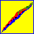

|
Next
Previous
Home
|
In level plot mode, one or several gamma rays can be selected with the mouse, and gamma rays coincident with the selected gamma(s) can be shown. In the figure the two blue gamma rays have been selected, and the red gammas are shown to be in coincidence with both gammas.
Detour to Coincidences |